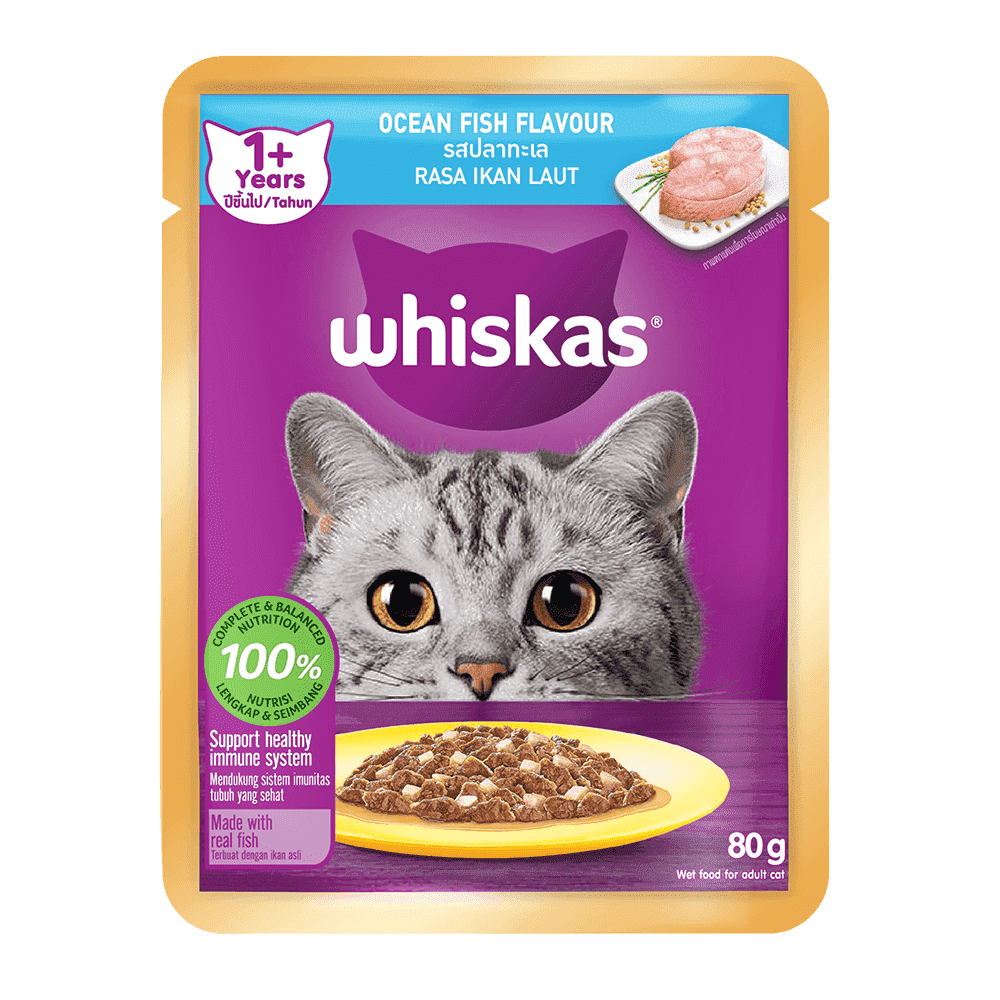
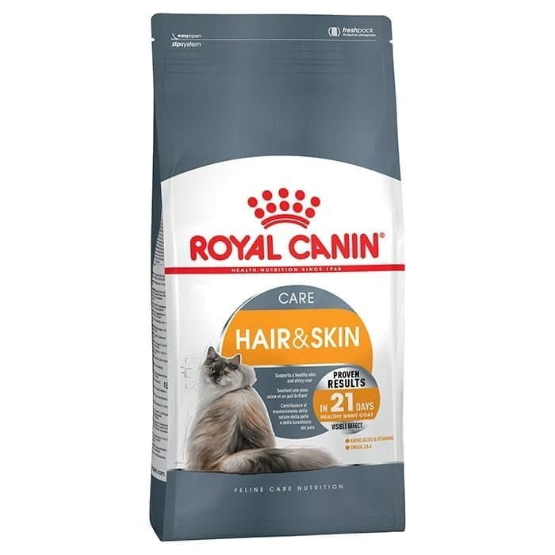
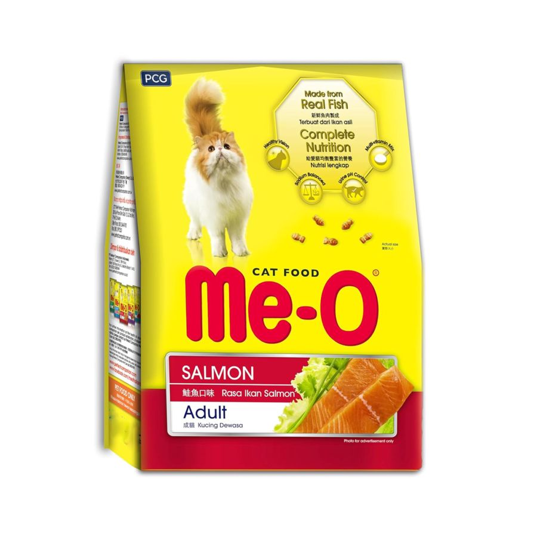
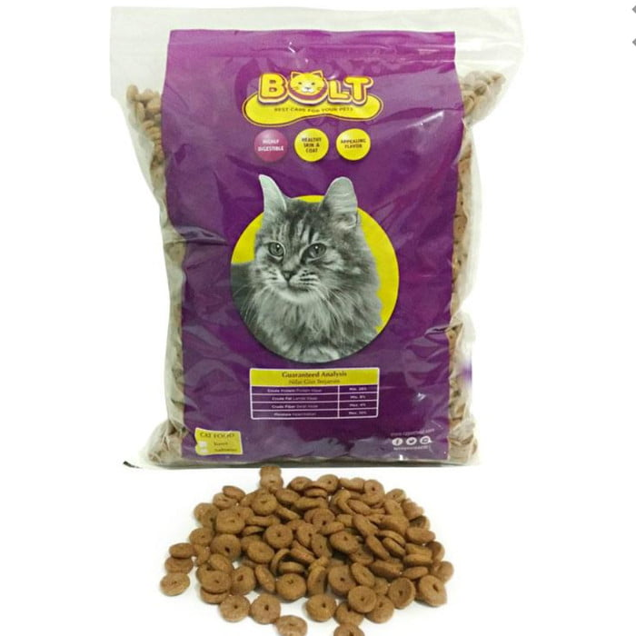

Nama: Muhammad Fathurrahman
NIM: 2024573010004
Kelas: TI 1C

British Shorthair adalah versi silsilah dari kucing domestik Inggris tradisional, dengan tubuh kekar yang khas, bulu tebal, dan wajah lebar. Varian warna yang paling dikenal adalah "British Blue", dengan bulu abu-abu-biru solid, mata nanas, dan ekor berukuran sedang.
Kucing persia adalah ras kucing domestik berbulu panjang dengan wajah bulat dan moncong pendek. Namanya mengacu pada Persia, nama lama Iran, di mana kucing serupa ditemukan. Sejak akhir abad 19, kucing jenis ini dikembangkan di Britania Raya. Di Britania Raya, ras ini disebut kucing "Persian Longhair".
Scottish Fold adalah ras kucing domestik yang khas yang ditandai oleh mutasi gen dominan alami yang terkait dengan osteochondrodysplasia. Kelainan genetik ini memengaruhi tulang rawan di seluruh tubuh, menyebabkan telinga "terlipat" (fold dalam bahasa inggris), membungkuk ke depan dan ke bawah ke arah depan kepala.
| Merk Makanan Kucing | Foto | Berat | Harga |
|---|---|---|---|
| Whiskas Junior |  | 1000gr | Rp 58.000 |
| Royal Canin |  | 400gr | Rp 84.000 |
| Meo |  | 400gr | Rp 31.000 |
| Bolt |  | 800gr | Rp 18.000 |
Untuk informasi lebih lanjut, kunjungi: